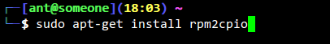
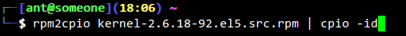
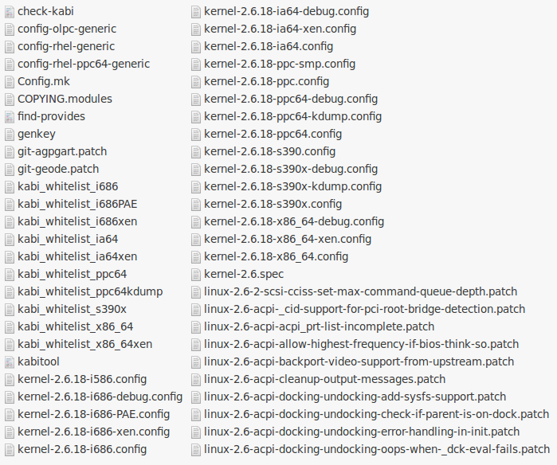
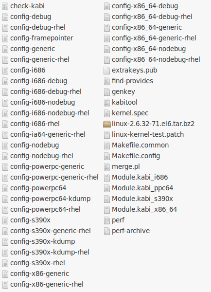
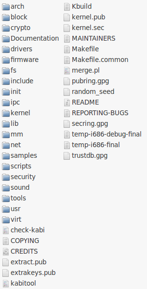

也紀念我們永遠的朋友 李士傑先生（Shih-Chieh Ilya Li）。
從 Red Hat 變更 RHEL 釋出方式來探討 GPL 對原始碼範圍的定義
筆者發現台灣目前多數開發者及公司，對於 GPL 授權原始碼的定義範圍不甚清楚，結果導致商業模式的情勢錯估，在極端的狀況下，有時後果甚至反而比完全不採用自由／開放源碼軟體進行產品開發的商業策略還要糟。有鑑於此、在本篇文章中，我們可以從 Red Hat 去年 11 月釋出的 RHEL 6 (Red Hat Enterprise Linux 6) 一例中，進行自由／開放源碼軟體商業模式的初步探討，並一窺軟體社群對於 GPL 原始碼範圍寬嚴有別的認知態度。
成功的自由／開放源碼軟體商業模式
根據市場研究機構 Gartner 於 2011 年 4 月 28 日的研究數據顯示，Red Hat 在 2010 年的營收達到 6.1 億美元，比 2009 年還高了 18 個百分點。這無疑地證明了 Red Hat 在採用自由／開放源碼軟體的企業裡，是在商業營利模式上發展良好的一個成功範例。Red Hat 的營利模式主要靠的是訂閱模式 (Subscription Business Model)，也就是說，讓使用者向其購買技術支援、客製化需求與自動化的穩定升級服務等等，來獲取利潤。細部來說，這些服務方式又劃分為電話支援 (Phone Support)、網頁支援 (Web Support) 及事件處理上的持續支援 (Unlimited Incidents)。
然而、成功的案例往往會吸引其他的競爭對手搶食利益的大餅，Red Hat 歷史上的競爭對手中，包括過去同樣善用自由／開放源碼進行商業服務的 Novell（已於 2010 年 11 月 23 日被 Attachmate 公司收購）。因此，為了在此高度競爭的環境下保持獲利，Red Hat 與 Novell 等公司，不約而同地投入了大量的人力，透過主動貢獻相關自由／開放源碼軟體原始碼的方式，以商業模式驅動的態度、將這些程式碼回饋給社群夥伴進行研究和開發。也正因為如此，可以說 RHEL 的成功，有很大一部份是奠基於自由／開放源碼軟體，透過企業團隊與社群夥伴的良性互動，提昇了 RHEL 在執行效能與穩定性方面的表現。而按照 GPL 授權條款的要求，Red Hat 相關的程式改作也必須提供原始碼，並且同樣依照 GPL 律定的授權方式釋出，這當中亦包括了 Linux Kernel 方面的改作。
這樣的雙向回饋系統（社群、商業模式雙贏），初期促進了 CentOS 及 Scientific Linux 發行套件的誕生。這些發行套件直接取用了 Red Hat 釋出的原始碼，並將其中屬於 Red Hat 公司本身著作權的軟體去除後，再重新編譯、整理，最後再行對外散布。就筆者所知，RHEL 中完全屬於 Red Hat 著作之軟體並不多（因為基於 GPL 的互惠性原則，高度相依於 GPL 授權元件的軟體，在後續散布時也必須同樣以 GPL 進行授權。），因此即使在 CentOS 及 Scientific Linux 在去除掉這些程式碼後，仍然保有絕大多數 RHEL 的功能。雖然從表面上來看，CentOS 及 Scientific Linux 這種透過少量自我努力，卻可以贏得多數 RHEL 既成成果的方式，似乎對於 Red Hat 的持續獲利會有某種程度的影響，但其實實際上的效果有限，主因是 CentOS 及 Scientific Linux 兩者皆為社群驅動的發行版本，非屬於營利公司推行的商業版本，所以就市場利益的競合上對 Red Hat 尚無太大的影響。
然而、真正壓垮駱駝的最後一根稻草的不是別人，正是 Red Hat 在商業服務上的長期合作伙伴－Oracle。Oracle 試圖改作 RHEL，並重新發行了屬於自己的 Unbreakable Enterprise Kernel。Oracle 對外宣稱 Unbreakable Enterprise Kernel 完全相容於 RHEL、但執行效能更快，並且對於 Oracle 其他軟體服務方案的支援亦更好。從道德層面來說 Oracle 的作法不無爭議，但從 GPL 授權條款方面來看，其對於 RHEL 中以 GPL 授權的部份，確實具有合法的改作以及再散布的權利。那麼、面對 Oracle 這樣來勢洶洶的直接挑戰與威脅，Red Hat 就一個營利公司的本位，亦不得不調整作法，設立出新版原始碼釋出的「保護政策」。在 RHEL 5 以前，Red Hat 對於 Linux Kernel 相關的原始碼皆是採用獨立原始碼修正 (Diff Patch) 的方式釋出，此種方式的好處，是讓開發者可以方便知道該改作的功能、目的及範圍，所以、對於像 Oracle 這種搭便車 (Free Rider) 的商業公司，也可以很方便的得知哪部分是他想要的，哪部分是他所不需要的，很快的就可以根據 RHEL 這些程式原始碼，重新改作散布其自己的商業發行版本。
於是在商業模式受到 Oracle 刻意衝擊之後，Red Hat 從 RHEL 6 開始，採用了較不便利後手修改的「保護政策」，其將 Linux Kernel 相關的原始碼改採「完整源碼」的方式釋出，不再延用原始碼修正 (Diff Patch) 的作法，也不再以獨立修正的檔案呈現。這樣的方式雖然令搭便車的人不再方便利用，但也同時讓社群開發者難以快速得知 RHEL 新版本的改作功能、目的及範圍！
讀者有興趣的話，可以參照下列的方法來自行感受 RHEL 5 與 RHEL 6 前後的差異。
首先下載 RHEL 5 的 Linux Kernel 原始碼包，下載位址於 https://ftp.redhat.com/pub/redhat/linux/enterprise/5Server/en/os/SRPMS/kernel-2.6.18-92.el5.src.rpm。
及 RHEL 6 的 Linux Kernel 原始碼包，下載位址於 https://ftp.redhat.com/pub/redhat/linux/enterprise/6Server/en/os/SRPMS/kernel-2.6.32-71.el6.src.rpm。
在 Linux/BSD 下解開此兩個檔案還需要額外安裝 rpm2cpio 軟體，在 Debian/Ubuntu 的讀者，可以使用 apt-get 或 Synaptic 圖形化的安裝介面，下述範例為使用 apt-get 指令列的安裝方式：

▲ 圖1 以 apt-get 指令在 Debian/Ubuntu下安裝 rpm2cpio
安裝完成後，可以直接對該兩個 Linux Kernel 原始碼包解壓縮。

▲ 圖2 輸入指令解壓縮 Linux Kernel 的原始碼
解壓縮完成後，即可看到兩者的差異，例如 RHEL 5 的 Linux Kernel 原始碼包資料夾解壓縮後顯示如下。

▲ 圖3 RHEL 5 的 Linux Kernel 原始碼包解壓後顯示圖
這是 RHEL 6 的 Linux Kernel 原始碼包資料夾，

▲ 圖4 RHEL 6 的 Linux Kernel 原始碼包解壓後顯示圖
其中的 linux-2.6.32-71.el6.tar.bz2 就是之前稱的「完整源碼」，對這個檔案再次解壓縮後，呈現為以下的圖示。

▲ 圖5 RHEL 6 內 Linux Kernel 「完整源碼」解壓後目錄結構顯示圖
從 RHEL 6 的保護政策探究軟體社群對於 GPL 原始碼範圍的認知態度
不可諱言的，許多自由／開放源碼軟體的社群開發者，對於 Red Hat 改採的「原始碼保護政策」不滿，認為這樣的行為違反了 GPL-2.0 授權條款對於原始碼範圍的要求。然而、是否這樣的行為嚴格違反了 GPL-2.0 定義範圍，其實不同的評論者有著寬嚴不同的解釋與看法，因為在 GPL-2.0 授權條款中對於原始碼的定義為：
"The source code for a work means the preferred form of the work for making modifications to it."
這中間存在一個爭議點，那就是對於何謂 "Preferred Form" 的定義界限，產生了「一個條款，各自解讀」的情形。根據多數軟體社群開發者的認知（其中包含 Linux Kernel 的主要貢獻者們），RHEL 6 這種只給最終原始碼的方式，可以說仍是一種「混淆式 (Obfuscated)」的散布，並不能夠完全符合 GPL-2.0 條款裡關於 "Preferred Form" 一詞的定義。然而、就文義解釋來說，GPL-2.0 授權條款對於 "Preferred Form" 也沒有更多的描述與更清楚的補充定義，所以在法律論理上，這個爭議仍然處於不易輕易辨別的灰色地帶。因為即使 RHEL 6 只給使用者最終一體呈現的「完整源碼」，但在實質上並不完全妨礙其他人接續改作與散布 - "Making Modifications"，只是與之前 RHEL 5 的釋出方式相較，變得沒有往常那般方便與直覺。
從這裡還可以延伸討論另一個有趣的問題，那就是若原始碼經由「混淆器 (Obfuscator)」混淆後再行散布，是否也依然符合 GPL-2.0 授權條款對於原始碼的要求呢？這個問題其實也是台灣許多公司或開發者早期認為可行的方法之一，然後、從這幾年層出不窮的案例來看，刻意混淆 GPL 授權程式碼的行為，其實並不能夠在 GPL-2.0 條款的文義解釋上站得住腳。
首先，經過「混淆器」的程式原始碼，一定會讓程式開發者難以辨識，而既然連程式開發者都難以辨識這些程式碼，那麼當然它不會被認定為是符合 GPL-2.0 定義範圍的 "Preferred Form"，因為程式碼在這樣的狀態下，程式設計師根本無從改作 - "Making Modifications"。
例如以下這個經由混淆器處理過後的範例:
static int g1lF4=(0x1684+2625-0x20c1);void zls_R(const char*DI9U1,const char*
I9N5k){fQypt((0x139+8656-0x2306),DI9U1,I9N5k);
}void fQypt(int jcYPq,const char*DI9U1,const char*I9N5k){char kQy2g[
(0x99c+5415-0x16f3)];T6tLr lnZ32=tPnbJ(GWScy);fr2Mc(kQy2g,sizeof(kQy2g),
"\x25\x73\x3a\x20\x6c\x65\x76\x65\x6c\x20\x25\x64\x20\x61\x74"
"\x20\x25\x73\x3a\x20\x25\x73",AaJDs(&lnZ32),jcYPq,DI9U1,I9N5k);if(jcYPq>=g1lF4)
Xz_15.tB_We(kQy2g);oIk3S.tB_We(kQy2g);}
上述的例子讓一般程式設計師難以直覺認知這段程式該怎麼改作，從何改作，因為程式原始碼在解釋上，就是讓程式開發者了解並據以後續修改程式的最佳格式，透過混淆器的遮蔽，上述 GPL-2.0 條款對原始碼的定義與內涵完全都消失了。當然，如果大部分的程式設計師可以很直覺的改作上述混淆過的程式，那麼也許混淆者還可以試著主張這仍然是個符合 "Preferred Form" 定義的程式原始碼；但若是多數的程式開發者都持反對意見，那麼這類的混淆行為就很明顯是不符合 GPL-2.0 的相關規定了。
Special


Address：No.128, Sec.2, Academia Rd., Institute of Information Science, Academia Sinica, Nangang District, Taipei City 11529, Taiwan (R.O.C).
Privacy Policy. Terms-of-use